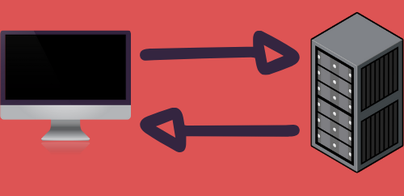

Arquitectura Cliente-Servidor
¿Que es la arquitectura Cliente-Servidor?
La arquitectura Cliente-Servidor se aplica cuando un dispositivo realiza una peticion de cierta informacion a travez de internet a otro dispositivo, donde el que realiza la peticion y recibe la informacion se denomina Cliente y el servidor es el encargado de recibir esta peticion y enviar la informacion solicitada.
Front-End
¿Que es el Front-End?
Es la parte de desarrollo para el cliente, el cual desarrolla la vista, y la parte logica para el funcionamiento de el sistema para el cliente.
¿Cuales son los roles dentro del Front-End?
Diseñador, Maquetador y Programador Front-End.
¿Cual es la función de cada uno de los roles del Front End?
Diseñador: Este se encarga de diseñar la interfaz (mockups, borradores, etc.) que llevara la pagina WEB.
Maquetador: Este se encarga de desarrollar el diseño realizado por el diseñador con HTML y CSS por ejemplo. Para la vista pagina WEB.
Programador: Este se encarga de desarrollar la logica de la pagina WEB que desarrollo el maquetador previamente. Un Ejemplo de este; programar el funcionamiento de los botones para que redireccione a una pagina.
¿Cuales son los principales lenguajes y frameworks usados en el Front-End?
HTML 5
CSS
JAVASCRIPT
ANGULARJS
REACTJS
BOOTSTRAP
Back-End
¿Que es el backEnd?

Es la parte de desarrollo del lado del servidor, donde se encuentran los servicios que requiere la aplicacion cliente (Front-End).
¿Cuales son los roles del BackEnd?
Backend developer, database administrator, cloud computing.
¿Cual es la función de cada rol?
BACKEND DEVELOPER: Este se encarga de desarrollar API's las cuales serviran para la conexion de front-end y back-end y ademas, los servicios correspondientes para el funcionamiento de la aplicacion.
DATABASE ADMINISTRATOR: Este se encarga de implementar y manejar la base de datos necesaria para la aplicacion web.
CLOUD COMPUTING: Este se encarga de administrar y gestionar los servidores o los servicios cloud segun sean el caso.
¿Cuales son los principales lenguajes de programación y frameworks del backend?
MONGODB
PHP
NODEJS
PYTHON
JAVA
¿Que es un Stack?

Un desarrollador full-stack tiene la capacidad de poder desarollar una aplicacion desde el front-end como en el back-end, utilizando tecnologias de ambos roles para poder realizar este trabajo.
Un ejemplo de stack: